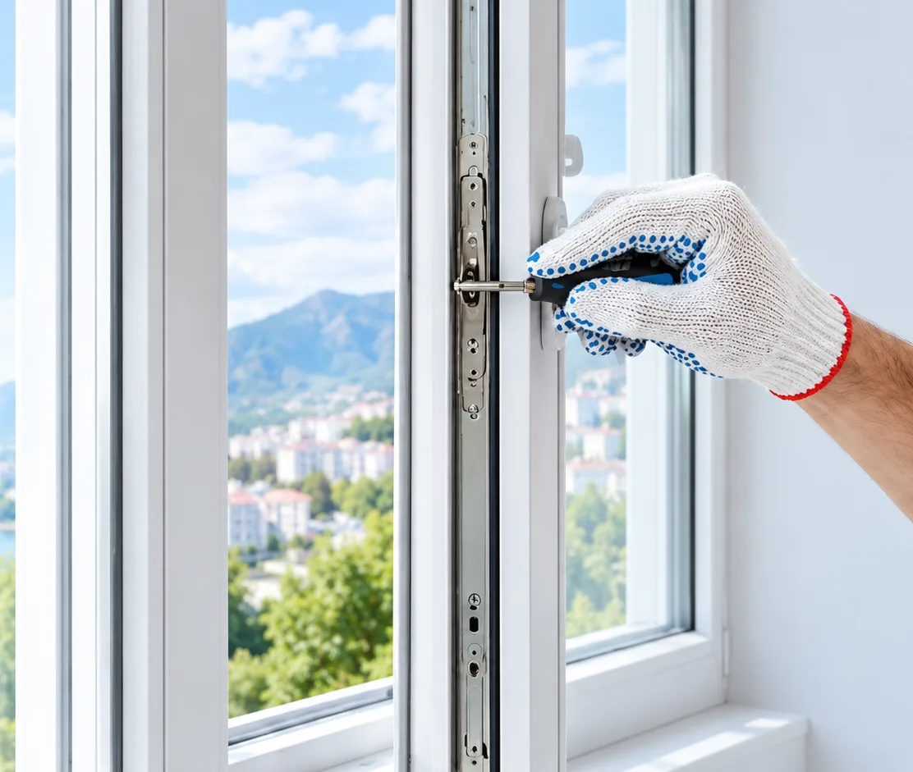
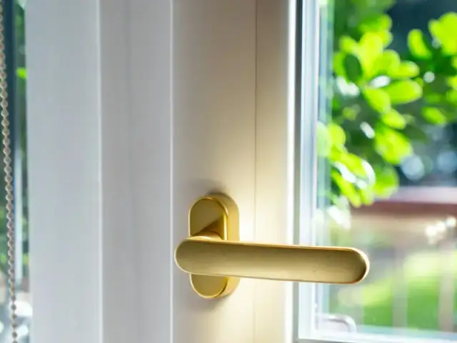
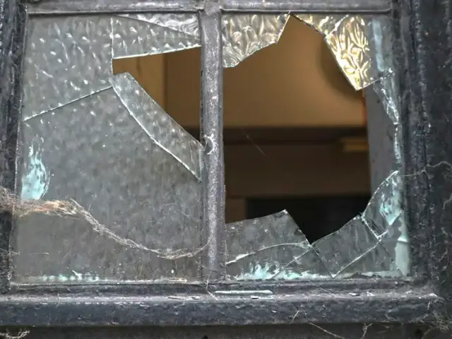
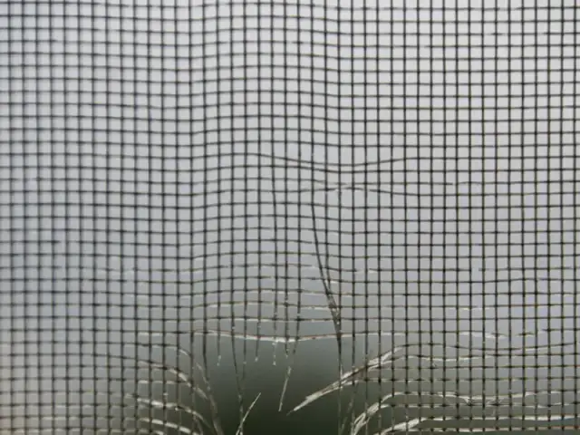
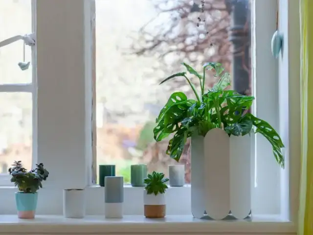
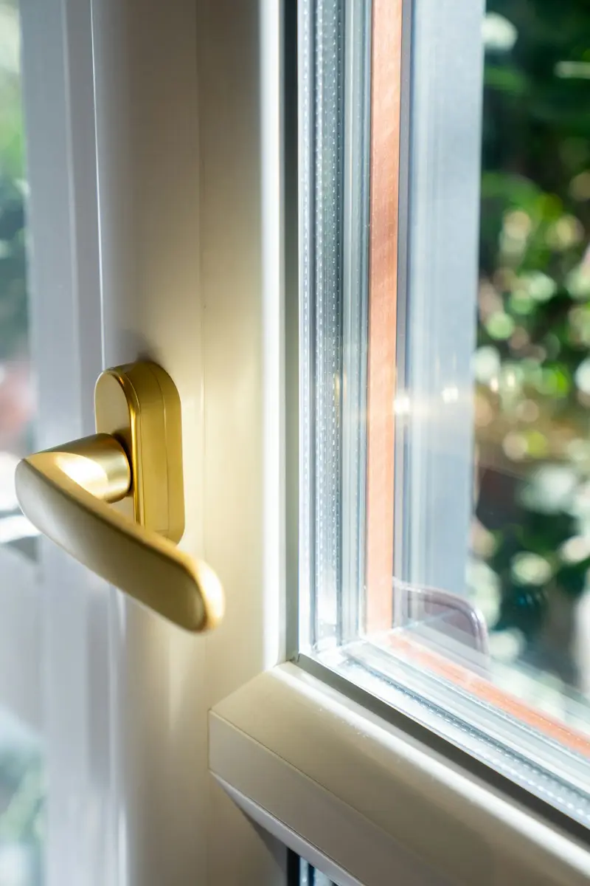
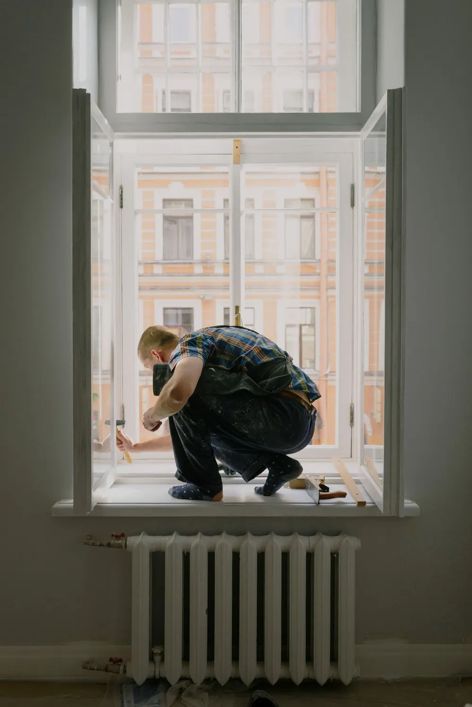

от 500 ₽
Дует из окна, сквозняк
Тянет холодом от створки, свистит ветер, в комнате прохладно даже с включённым отоплением.
- регулировка прижима створки
- замена уплотнителя (резинок)
- перевод на зимний режим
- герметизация швов
Устраняем продувание, сквозняки, заменяем фурнитуру, уплотнители и стеклопакеты. Регулируем окна любой сложности.

Выберите, что беспокоит, — мастер приедет с нужными деталями. Если не знаете, в чём причина, — разберёмся на бесплатной диагностике.
Тянет холодом от створки, свистит ветер, в комнате прохладно даже с включённым отоплением.

от 400 ₽Створка провисла и цепляет раму, ручка туго ходит или прокручивается, окно заблокировалось в откинутом положении.
Вода на стекле и подоконнике по утрам, чёрные пятна на откосах, промерзают углы.

от 2 900 ₽Трещина или скол, конденсат между стёклами, хотите тише или теплее.

от 700 ₽Порвалась, выпала, потерялись крепления или сетки нет вовсе.

от 600 ₽Подоконник вздулся или треснул, откосы почернели, отлив гремит под дождём.

от 500 ₽Дверь провисла и трётся о порог, тяжело закрывается, дует по периметру.
Окна давно не обслуживали, ручка ходит туго, створка закрывается с усилием.
Цены указаны за работу. Точную стоимость с деталями мастер назовёт после бесплатной диагностики — и она не изменится в процессе.
| Регулировка створкиприжим, провисание, задевает раму | от 400 ₽ |
| Перевод на зимний / летний режимза створку | от 250 ₽ |
| Чистка и смазка фурнитурыза створку | от 300 ₽ |
| Замена оконной ручкистандартная ручка включена | от 500 ₽ |
| Ручка с ключом или кнопкой (детская защита) | от 900 ₽ |
| Вскрытие заблокированной створки | от 600 ₽ |
| Замена элемента фурнитурыножницы, петля, угловой переключатель, запор | от 1 500 ₽ |
| Замена фурнитуры на створке полностью | от 3 500 ₽ |
| Установка поворотно-откидной фурнитуры вместо поворотной | от 4 000 ₽ |
| Гребёнка, ограничитель открывания, микролифт | от 400 ₽ |
| Устранение продуваниядиагностика + регулировка прижима | от 500 ₽ |
| Замена уплотнителя створки или рамыза погонный метр, с материалом | от 200 ₽/м |
| Обслуживание «под зиму»за створку: режим, регулировка, смазка, проверка | от 900 ₽ |
| Герметизация швов снаружи или изнутри | от 250 ₽/м |
| Устранение промерзания откосов | от 800 ₽ |
| Установка приточного клапана | от 2 500 ₽ |
| Замена однокамерного стеклопакетаработа + пакет стандартного размера | от 2 900 ₽ |
| Замена двухкамерного стеклопакета | от 3 500 ₽ |
| Энергосберегающий или шумоизоляционный пакет | от 3 900 ₽ |
| Замена штапика | от 150 ₽/м |
| Замена глухой створки на открывающуюся | от 7 500 ₽ |
| Москитная сетка рамочнаязамер, изготовление, установка | от 1 300 ₽ |
| Сетка «Антикошка» | от 2 800 ₽ |
| Сетка «Антипыль» / «Антимошка» | от 1 900 ₽ |
| Перетяжка полотна, замена уголков | от 700 ₽ |
| Замена креплений или ручек сетки | от 300 ₽ |
| Замена пластикового подоконниказа погонный метр, без материала | от 1 200 ₽/м |
| Ремонт подоконника, заглушки, герметизация | от 800 ₽ |
| Пластиковые откосы под ключ | от 1 000 ₽/м |
| Замена отлива | от 600 ₽/м |
| Шумоизоляция отлива | от 400 ₽/м |
| Регулировка балконной двери | от 500 ₽ |
| Балконная защёлка или ручка-«ракушка» | от 600 ₽ |
| Двусторонняя ручка на балконную дверь | от 2 500 ₽ |
| Ремонт входной пластиковой дверирегулировка, замок, петли, доводчик | от 800 ₽ |
| Замена петель окна или двери | от 1 200 ₽ |
| Детский замок на окно | от 900 ₽ |
| Оклейка стекла бронеплёнкойзащита от удара и осколков | от 1 500 ₽/м² |
| Профилактика всех окон в квартире | по осмотру |
Диагностика и консультация — бесплатно, даже если вы решите не делать ремонт. Выезд по Симферополю — бесплатно, по Крыму — стоимость выезда согласуем заранее, по телефону.
Оставьте заявку на сайте или позвоните по телефону
Мастер приедет, осмотрит окна и найдёт причину неисправности
Согласуем объём работ и фиксируем цену до начала ремонта
Выполняем работы аккуратно и убираем за собой
Вы оплачиваете работу удобным способом, когда всё готово
Представьте её состояние после 5–10 лет эксплуатации без обслуживания.
Мы продлеваем жизнь вашим окнам — во благо вам и вашему дому.

Мы занимаемся только ремонтом и обслуживанием — нам незачем продавать вам новые окна.
Стоимость согласуем до начала работ — без неожиданных доплат.
Отвечаем за результат: если что-то пойдёт не так по нашей вине — исправим.
Сначала ремонт и проверка результата вместе с вами, потом оплата.
Подбираем фурнитуру и уплотнитель под ваш профиль, без лишней замены деталей.
Не навязываем лишнего, работаем аккуратно и убираем за собой.
Квартиры, частные дома, офисы, гостиницы и апартаменты — по Симферополю и Крыму.
Из-под створки в спальне сильно дуло. Мастер отрегулировал окна и поменял уплотнитель — стало тепло и тихо. Цену назвал до начала работ, так и заплатили.
12 сентября 2026Перестала нормально закрываться балконная дверь. Мастер нашёл причину, всё отремонтировал за один визит и убрал за собой. Рекомендую.
3 сентября 2026Заказывала перевод окон на зимний режим и смазку фурнитуры. Всё сделали аккуратно и подсказали, как ухаживать за окнами. Спасибо!
27 августа 2026На кухонном окне сломалась ручка, заодно попросила поставить москитные сетки. Мастер всё подобрал по размеру и установил за один приезд. Довольна.
19 августа 2026Зимой окна в спальне сильно потели. Мастер объяснил причину, поменял уплотнитель и поставил приточный клапан. Конденсата стало заметно меньше.
8 августа 2026Створка просела и цеплялась за раму. Думала, окно придётся менять, но мастер отрегулировал фурнитуру — теперь закрывается легко.
30 июля 2026Обслуживали окна у нас в офисе. Работали аккуратно, мебель накрыли, мусор забрали. Итоговая сумма совпала с согласованной до начала работ.
22 июля 2026Дети попали мячом в окно, треснул стеклопакет. Мастер снял замеры, потом приехал и поменял пакет. Всё чисто, следов работы не осталось.
14 июля 2026В частном доме продувало почти все окна. Сделали регулировку, смазку и заменили уплотнитель где нужно. Разница чувствуется сразу.
2 июля 2026Попросила поставить детские замки на окна в детской. Мастер подсказал подходящий вариант и всё установил. Теперь спокойна за ребёнка.
24 июня 2026Перед сезоном проверяли окна в наших апартаментах. Мастер прошёл все номера, отрегулировал створки и заменил пару ручек. Будем обращаться ещё.
11 июня 2026Да. Диагностика и консультация бесплатны, даже если вы решите не делать ремонт. Выезд по Симферополю — бесплатно; если вы в другом городе Крыма, стоимость выезда назовём заранее, по телефону.
Время выезда согласуем по телефону — подстроимся под ваш график. Работаем ежедневно с 9:00 до 21:00.
Нет, выезжаем по всему Крыму. Работаем с квартирами, частными домами, офисами, гостиницами и апартаментами.
Нет. Мастер называет окончательную стоимость после осмотра и до начала работ. Если в процессе выяснится что-то непредвиденное, сначала согласуем с вами — без вашего согласия ничего дополнительно не делаем.
Да, ремонтируем пластиковые окна и двери с любыми профилями и фурнитурой. На диагностике мастер определит производителя и подберёт подходящие детали.
В зимнем режиме створка сильнее прижимается к раме — уходят сквозняки и теплопотери. Летом прижим ослабляют, чтобы уплотнитель служил дольше. Перевод занимает несколько минут на створку, мастер заодно проверит и смажет фурнитуру.
Причин несколько: высокая влажность и слабая вентиляция, продувание из-за износа уплотнителя, ошибки монтажа (промерзают откосы) или разгерметизация стеклопакета. На диагностике мастер определит причину и предложит решение — от регулировки до установки приточного клапана.
На выполненные работы даём гарантию, срок зависит от вида работ — мастер назовёт его до начала ремонта. Если в течение гарантии что-то пойдёт не так по нашей вине, исправим бесплатно.
Только после выполнения работ, когда вы проверили результат. Стоимость согласовываем заранее — без неожиданных доплат.
Достаточно освободить подоконник и подход к окну, а шторы или жалюзи отодвинуть, чтобы створка свободно открывалась. Инструмент и детали мастер привозит с собой, после работы убирает за собой.
Оставьте заявку — мастер свяжется с вами в ближайшее время и проконсультирует по всем вопросам.